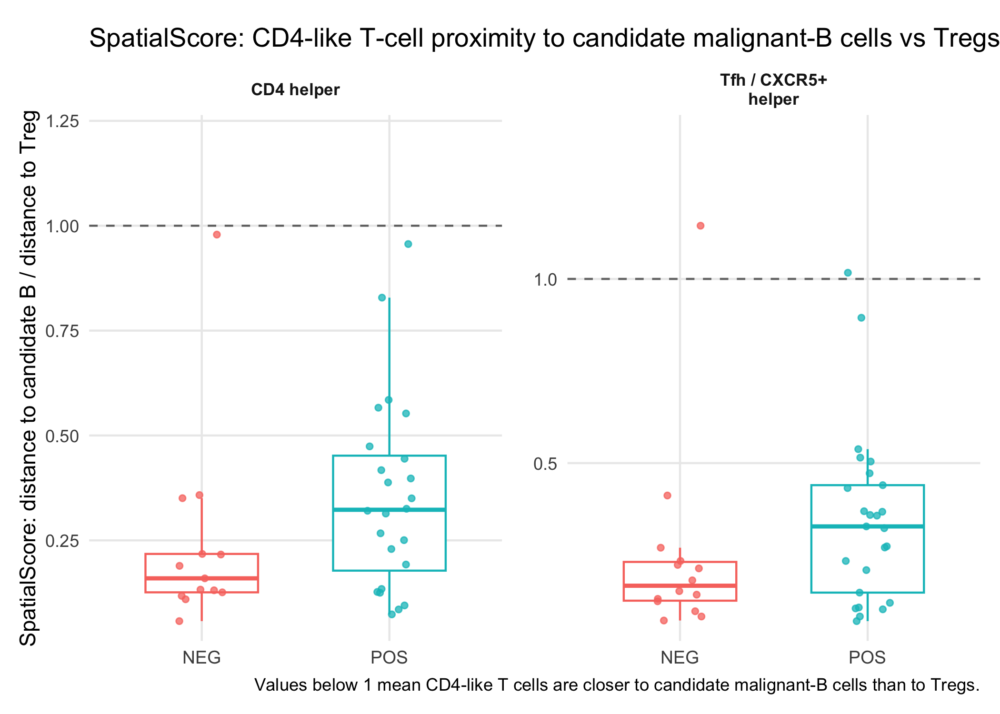
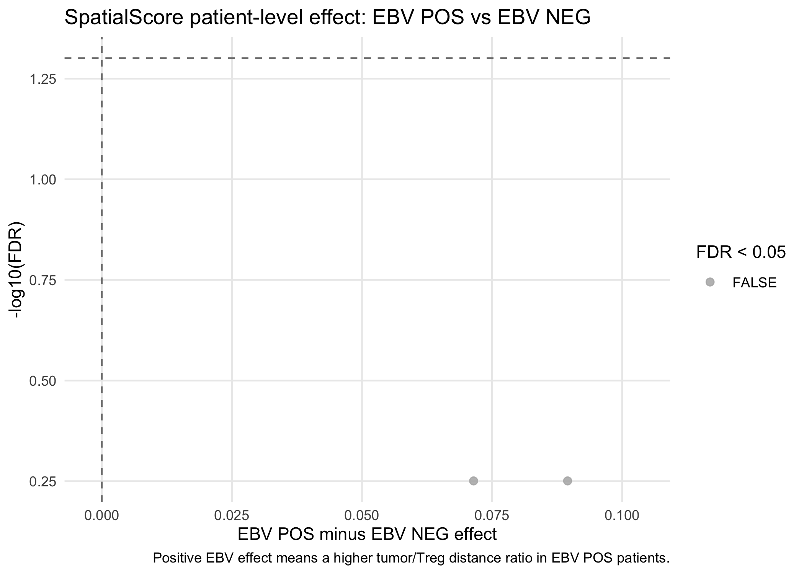
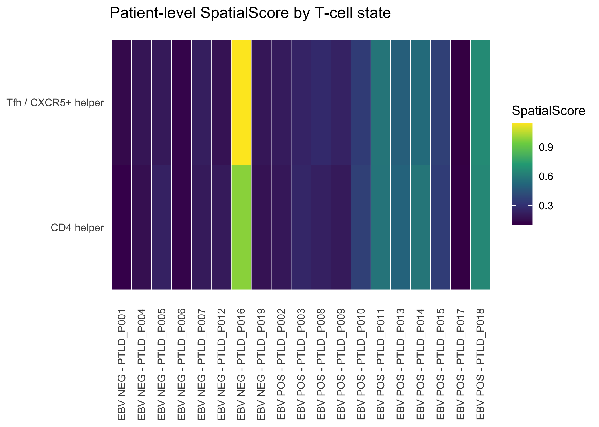

This section adapts the SpatialScore idea to the current Proseg-backed PTLD atlas. For each CD4-like T cell in an included PTLD core, SpatialScore is calculated as the distance to the nearest candidate malignant-B cell divided by the distance to the nearest Treg. Values below 1 mean the CD4-like T cell is closer to candidate malignant-B cells than to Tregs.
if (!requireNamespace("FNN", quietly = TRUE)) {
stop("Install the 'FNN' package to run SpatialScore nearest-neighbor distances.")
}
spatialscore_out_dir <- file.path(output_root, "EBV_spatialscore")
dir.create(spatialscore_out_dir, showWarnings = FALSE, recursive = TRUE)
spatialscore_min_cells <- 10L
spatialscore_epsilon <- 1
candidate_malignant_b_positive_calls <- c("Candidate malignant B", "EBV-positive candidate malignant B")
decode_level_values <- function(x, level_values) {
out <- as.character(x)
idx <- suppressWarnings(as.integer(out))
use_idx <- !is.na(idx) & idx >= 1 & idx <= length(level_values)
out[use_idx] <- level_values[idx[use_idx]]
out
}
nearest_distance <- function(query_df, target_df) {
query_df <- query_df[is.finite(query_df$x) & is.finite(query_df$y), , drop = FALSE]
target_df <- target_df[is.finite(target_df$x) & is.finite(target_df$y), , drop = FALSE]
FNN::get.knnx(
data = as.matrix(target_df[, c("x", "y"), drop = FALSE]),
query = as.matrix(query_df[, c("x", "y"), drop = FALSE]),
k = 1
)$nn.dist[, 1]
}
ptld_cells <- build_ptld_analysis_cells(xenium_by_condition, centroids_by_condition)
ptld_cells <- ptld_cells[
is.finite(ptld_cells$x) &
is.finite(ptld_cells$y) &
!is.na(ptld_cells$patient_id) &
ptld_cells$patient_id != "" &
!is.na(ptld_cells$analysis_ebv_group) &
ptld_cells$analysis_ebv_group %in% c("EBV POS", "EBV NEG"),
,
drop = FALSE
]
ptld_cells$condition <- as.character(ptld_cells$analysis_ebv_group)
ptld_cells$tcell_state_label <- decode_level_values(ptld_cells$tcell_state, tcell_state_levels)
ptld_cells$candidate_malignant_b_spatialscore <- as.character(ptld_cells$candidate_malignant_b_call) %in% candidate_malignant_b_positive_calls
cd4_tcell_states_to_score <- intersect(c("CD4 helper", "Tfh / CXCR5+ helper"), tcell_state_levels)
triplet_definition <- data.frame(
role = c("CT1", "CT2", "CT3"),
definition = c(
paste("CD4-like T-cell states:", paste(cd4_tcell_states_to_score, collapse = "; ")),
paste("Candidate malignant-B calls:", paste(candidate_malignant_b_positive_calls, collapse = "; ")),
"Treg cells"
),
min_cells_per_core_state = spatialscore_min_cells,
spatialscore_formula = "(distance_from_CD4_T_cell_to_nearest_candidate_malignant_B + 1) / (distance_from_CD4_T_cell_to_nearest_Treg + 1)",
low_score_interpretation = "SpatialScore < 1 means the CD4-like T cell is closer to candidate malignant-B cells than to Tregs",
stringsAsFactors = FALSE
)
write.csv(triplet_definition, file = file.path(spatialscore_out_dir, "spatialscore_triplet_definition.csv"), row.names = FALSE)
core_split <- split(ptld_cells, interaction(ptld_cells$sample_key, ptld_cells$core_id, drop = TRUE))
cell_rows <- list()
score_rows <- list()
skip_rows <- list()
expand_base_info <- function(base_info, n) {
data.frame(
sample_key = rep(as.character(base_info$sample_key), n),
condition = rep(as.character(base_info$condition), n),
core_id = rep(as.character(base_info$core_id), n),
patient_id = rep(as.character(base_info$patient_id), n),
stringsAsFactors = FALSE
)
}
for (core_name in names(core_split)) {
core_df <- core_split[[core_name]]
base_info <- unique(core_df[, c("sample_key", "condition", "core_id", "patient_id"), drop = FALSE])[1, , drop = FALSE]
ct2_df <- core_df[core_df$candidate_malignant_b_spatialscore, , drop = FALSE]
ct3_df <- core_df[core_df$tcell_state_label %in% "Treg", , drop = FALSE]
for (state_name in cd4_tcell_states_to_score) {
ct1_df <- core_df[core_df$tcell_state_label %in% state_name, , drop = FALSE]
n_ct1 <- nrow(ct1_df)
n_ct2 <- nrow(ct2_df)
n_ct3 <- nrow(ct3_df)
skip_reason <- character()
if (n_ct1 < spatialscore_min_cells) skip_reason <- c(skip_reason, paste0("CT1 ", state_name, " cells < ", spatialscore_min_cells))
if (n_ct2 < spatialscore_min_cells) skip_reason <- c(skip_reason, paste0("CT2 candidate malignant-B cells < ", spatialscore_min_cells))
if (n_ct3 < spatialscore_min_cells) skip_reason <- c(skip_reason, paste0("CT3 Treg cells < ", spatialscore_min_cells))
if (length(skip_reason) > 0) {
skip_rows[[length(skip_rows) + 1]] <- cbind(
expand_base_info(base_info, 1),
data.frame(
feature = state_name,
n_ct1 = n_ct1,
n_ct2 = n_ct2,
n_ct3 = n_ct3,
skip_reason = paste(skip_reason, collapse = "; "),
stringsAsFactors = FALSE
)
)
next
}
ct1_to_ct2 <- nearest_distance(ct1_df, ct2_df)
ct1_to_ct3 <- nearest_distance(ct1_df, ct3_df)
cell_values <- (ct1_to_ct2 + spatialscore_epsilon) / (ct1_to_ct3 + spatialscore_epsilon)
median_ct1_to_ct2 <- stats::median(ct1_to_ct2, na.rm = TRUE)
median_ct1_to_ct3 <- stats::median(ct1_to_ct3, na.rm = TRUE)
cell_rows[[length(cell_rows) + 1]] <- cbind(
expand_base_info(base_info, length(cell_values)),
data.frame(
sample_id = paste(base_info$condition, base_info$core_id, sep = "__"),
feature = state_name,
cell_key = ct1_df$key,
cell_id = ct1_df$cell_id,
distance_to_candidate_malignant_b = ct1_to_ct2,
distance_to_treg = ct1_to_ct3,
value = cell_values,
stringsAsFactors = FALSE
)
)
score_rows[[length(score_rows) + 1]] <- cbind(
expand_base_info(base_info, 1),
data.frame(
sample_id = paste(base_info$condition, base_info$core_id, sep = "__"),
feature = state_name,
n_ct1 = n_ct1,
n_ct2 = n_ct2,
n_ct3 = n_ct3,
median_ct1_to_candidate_malignant_b = median_ct1_to_ct2,
median_ct1_to_treg = median_ct1_to_ct3,
value = stats::median(cell_values, na.rm = TRUE),
stringsAsFactors = FALSE
)
)
}
}
spatialscore_by_cell <- if (length(cell_rows) > 0) do.call(rbind, cell_rows) else data.frame()
spatialscore_by_core <- if (length(score_rows) > 0) do.call(rbind, score_rows) else data.frame()
spatialscore_skip_reasons <- if (length(skip_rows) > 0) do.call(rbind, skip_rows) else data.frame()
write.csv(spatialscore_by_cell, file = file.path(spatialscore_out_dir, "spatialscore_by_cell.csv"), row.names = FALSE)
write.csv(spatialscore_by_core, file = file.path(spatialscore_out_dir, "spatialscore_by_core.csv"), row.names = FALSE)
write.csv(spatialscore_skip_reasons, file = file.path(spatialscore_out_dir, "spatialscore_skip_reasons.csv"), row.names = FALSE)
if (nrow(spatialscore_by_core) > 0) {
spatialscore_patient_res <- run_patient_feature_limma(
spatialscore_by_core,
feature_col = "feature",
patient_col = "patient_id",
value_col = "value",
condition_col = "condition"
)
spatialscore_by_patient <- spatialscore_patient_res$patient_metrics
spatialscore_limma <- spatialscore_patient_res$limma
} else {
spatialscore_by_patient <- data.frame()
spatialscore_limma <- data.frame()
}
write.csv(spatialscore_by_patient, file = file.path(spatialscore_out_dir, "spatialscore_by_patient.csv"), row.names = FALSE)
write.csv(spatialscore_limma, file = file.path(spatialscore_out_dir, "spatialscore_patient_level_limma.csv"), row.names = FALSE)
if (nrow(spatialscore_by_core) > 0) {
p_spatialscore_box <- make_condition_boxplot(
spatialscore_by_core,
feature_col = "feature",
value_col = "value",
title_text = "SpatialScore: CD4-like T-cell proximity to candidate malignant-B cells vs Tregs",
y_label = "SpatialScore: distance to candidate B / distance to Treg"
) +
ggplot2::geom_hline(yintercept = 1, linetype = 2, color = "grey45") +
ggplot2::labs(caption = "Values below 1 mean CD4-like T cells are closer to candidate malignant-B cells than to Tregs.")
show_and_save_plot(
p_spatialscore_box,
filename = file.path(spatialscore_out_dir, "spatialscore_by_core_boxplots.jpg"),
width = 12,
height = 6
)
}
if (nrow(spatialscore_limma) > 0) {
p_spatialscore_effect <- make_limma_effect_plot(
spatialscore_limma,
title_text = "SpatialScore patient-level effect: EBV POS vs EBV NEG"
) +
ggplot2::scale_x_continuous(expand = ggplot2::expansion(mult = c(0.08, 0.22))) +
ggplot2::coord_cartesian(clip = "off") +
ggplot2::labs(caption = "Positive EBV effect means a higher tumor/Treg distance ratio in EBV POS patients.")
show_and_save_plot(
p_spatialscore_effect,
filename = file.path(spatialscore_out_dir, "spatialscore_patient_level_effect_summary.jpg"),
width = 8,
height = 6
)
}
if (nrow(spatialscore_by_patient) > 0) {
spatialscore_by_patient$patient_display <- paste(spatialscore_by_patient$condition, spatialscore_by_patient$patient_id, sep = " - ")
p_spatialscore_heatmap <- make_feature_heatmap(
spatialscore_by_patient,
x_col = "patient_display",
y_col = "feature",
fill_col = "value",
title_text = "Patient-level SpatialScore by T-cell state"
) +
ggplot2::labs(fill = "SpatialScore")
show_and_save_plot(
p_spatialscore_heatmap,
filename = file.path(spatialscore_out_dir, "spatialscore_patient_heatmap.jpg"),
width = 10,
height = 5
)
}
knitr::kable(
triplet_definition,
row.names = FALSE,
caption = "SpatialScore triplet definitions"
)| role | definition | min_cells_per_core_state | spatialscore_formula | low_score_interpretation |
|---|---|---|---|---|
| CT1 | CD4-like T-cell states: CD4 helper; Tfh / CXCR5+ helper | 10 | (distance_from_CD4_T_cell_to_nearest_candidate_malignant_B + 1) / (distance_from_CD4_T_cell_to_nearest_Treg + 1) | SpatialScore < 1 means the CD4-like T cell is closer to candidate malignant-B cells than to Tregs |
| CT2 | Candidate malignant-B calls: Candidate malignant B; EBV-positive candidate malignant B | 10 | (distance_from_CD4_T_cell_to_nearest_candidate_malignant_B + 1) / (distance_from_CD4_T_cell_to_nearest_Treg + 1) | SpatialScore < 1 means the CD4-like T cell is closer to candidate malignant-B cells than to Tregs |
| CT3 | Treg cells | 10 | (distance_from_CD4_T_cell_to_nearest_candidate_malignant_B + 1) / (distance_from_CD4_T_cell_to_nearest_Treg + 1) | SpatialScore < 1 means the CD4-like T cell is closer to candidate malignant-B cells than to Tregs |



| condition | feature | median_core_spatialscore |
|---|---|---|
| EBV NEG | CD4 helper | 0.160 |
| EBV POS | CD4 helper | 0.323 |
| EBV NEG | Tfh / CXCR5+ helper | 0.167 |
| EBV POS | Tfh / CXCR5+ helper | 0.328 |
| feature | logFC | AveExpr | P.Value | adj.P.Val |
|---|---|---|---|---|
| CD4 helper | 0.0895 | 0.3277 | 0.4195 | 0.5614 |
| Tfh / CXCR5+ helper | 0.0714 | 0.3380 | 0.5614 | 0.5614 |
| feature | skip_reason | n_core_states |
|---|---|---|
| CD4 helper | CT1 CD4 helper cells < 10 | 3 |
| CD4 helper | CT1 CD4 helper cells < 10; CT3 Treg cells < 10 | 1 |
| Tfh / CXCR5+ helper | CT1 Tfh / CXCR5+ helper cells < 10 | 1 |
| Tfh / CXCR5+ helper | CT1 Tfh / CXCR5+ helper cells < 10; CT3 Treg cells < 10 | 1 |
| CD4 helper | CT3 Treg cells < 10 | 1 |
| Tfh / CXCR5+ helper | CT3 Treg cells < 10 | 1 |